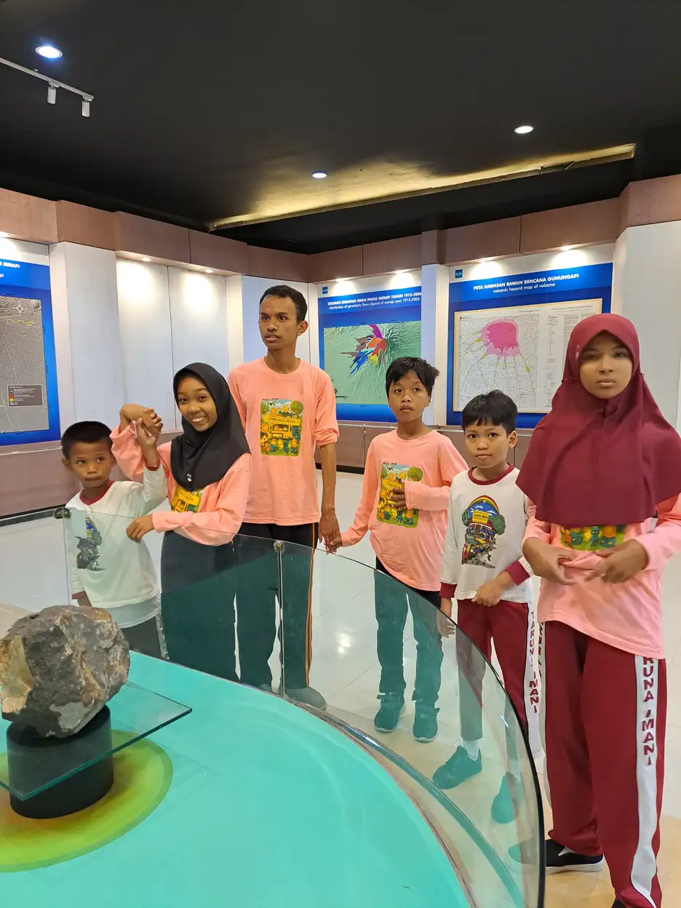

Tuna rungu wicara adalah kondisi ketika gangguan pendengaran yang dialami seseorang ikut berdampak pada kemampuan berbicaranya. Anak belajar bicara dengan cara mendengar, meniru, lalu memperbaiki ucapannya sendiri. Ketika jalur mendengar itu terganggu sejak awal, perkembangan bicara ikut tertahan meski organ suara dan mulutnya sehat. Jadi masalah utamanya bukan pada pita suara atau lidah, melainkan pada akses terhadap bunyi bahasa. Kabar baiknya, semakin cepat gangguan dengar ditemukan dan semakin cepat anak mendapat bahasa yang bisa ia serap, semakin kecil jarak perkembangan yang harus dikejar. Artikel ini menguraikan definisi, penyebab, derajat gangguan, skrining, alat bantu, dan terapi yang tersedia.
Tuna Rungu Wicara Adalah Apa?
Istilah tunarungu wicara dipakai untuk menyebut kondisi gabungan: ada gangguan pada fungsi pendengaran, dan gangguan itu berdampak pada kemampuan berbicara. Istilah ini lazim muncul di dokumen sekolah, formulir layanan sosial, dan data kependudukan di Indonesia.
Logikanya sederhana. Bicara adalah keterampilan yang dipelajari lewat telinga. Bayi mendengar suara di sekitarnya, menyimpan pola bunyi, mencoba menirunya, lalu memperbaiki ucapannya berdasarkan apa yang ia dengar dari dirinya sendiri dan dari orang lain. Kalau saluran masukan itu tertutup atau kabur sejak awal, seluruh rangkaian belajar tersebut terganggu.
World Health Organization menyebut seseorang mengalami gangguan pendengaran bila ambang dengarnya lebih buruk dari 20 desibel pada kedua telinga. Ketika gangguan itu lebih dari 35 desibel pada telinga yang lebih baik, kondisinya dikategorikan sebagai gangguan pendengaran yang menghambat fungsi sehari-hari.
Yang penting dipahami sejak awal:
- Organ bicara anak tunarungu wicara umumnya normal, yang bermasalah adalah akses ke bunyi bahasa.
- Kecerdasan tidak ditentukan oleh kemampuan mendengar. Anak yang mendapat bahasa sejak dini bisa berkembang setara teman sebayanya.
- Bicara bukan satu-satunya ukuran keberhasilan. Anak yang lancar berbahasa isyarat adalah anak yang berbahasa, meski suaranya jarang terdengar.
Dalam Undang-Undang Nomor 8 Tahun 2016 tentang Penyandang Disabilitas, kondisi ini termasuk ragam disabilitas sensorik, yang mencakup disabilitas rungu dan disabilitas wicara.

Beda Tunarungu, Tunawicara, dan Tunarungu Wicara
Tiga istilah ini sering dipakai bergantian, padahal maknanya berbeda dan implikasi penanganannya juga berbeda.
| Istilah | Inti kondisi | Catatan penting |
|---|---|---|
| Tunarungu | Gangguan pada fungsi pendengaran | Belum tentu berdampak pada bicara, terutama bila terjadi setelah anak lancar berbahasa |
| Tunawicara | Gangguan pada kemampuan produksi bicara | Bisa terjadi pada orang dengan pendengaran normal, misalnya karena kelainan organ bicara atau gangguan saraf |
| Tunarungu wicara | Gangguan dengar yang berdampak pada bicara | Paling sering terjadi bila gangguan dengar muncul sebelum anak menguasai bahasa |
Waktu munculnya gangguan sangat menentukan. Anak yang kehilangan pendengaran sebelum menguasai bahasa menghadapi tantangan berbeda dibanding anak yang kehilangan pendengaran setelah sudah lancar bicara. Kelompok pertama harus membangun bahasa dari nol lewat jalur visual, kelompok kedua sudah punya fondasi bahasa dan tugasnya lebih ke mempertahankan serta menyesuaikan.
Perlu dibedakan juga dari keterlambatan bicara yang bukan disebabkan gangguan dengar. Ada anak yang pendengarannya normal tetapi bicaranya terlambat karena sebab lain. Karena itu langkah pertama ketika anak belum bicara di usia yang diharapkan selalu sama: periksa pendengarannya dulu, jangan langsung menyimpulkan penyebabnya.
Jenis Gangguan Pendengaran
Secara medis, gangguan pendengaran dikelompokkan berdasarkan bagian telinga mana yang bermasalah. Pengelompokan ini penting karena menentukan apakah kondisinya bisa dipulihkan atau harus dikelola jangka panjang.
Gangguan konduktif
Terjadi ketika suara terhambat mencapai telinga dalam, misalnya karena kotoran telinga menumpuk, cairan di telinga tengah, gendang telinga berlubang, atau infeksi telinga tengah. Banyak kasus konduktif bisa diobati atau dikoreksi, sehingga pendengaran membaik.
Gangguan sensorineural
Terjadi ketika kerusakan ada pada telinga dalam atau pada saraf pendengaran. Sifatnya umumnya permanen. Inilah jenis yang paling sering ditemui pada anak dengan tunarungu bawaan. Penanganannya berupa alat bantu dengar, implan koklea, dan dukungan bahasa, bukan penyembuhan.
Gangguan campuran
Kombinasi keduanya, misalnya anak dengan gangguan sensorineural bawaan yang kemudian juga mengalami infeksi telinga tengah berulang. Bagian konduktifnya mungkin bisa ditangani, bagian sensorineuralnya tetap perlu dikelola.
Ada juga gangguan yang berkaitan dengan pemrosesan bunyi di otak, ketika telinga menangkap suara dengan baik tetapi otak kesulitan mengolahnya menjadi informasi yang bermakna. Kondisi ini butuh pemeriksaan khusus dan tidak bisa disimpulkan dari tes pendengaran biasa saja.
Hanya dokter THT dan audiolog yang bisa menentukan jenis mana yang dialami anak Anda, melalui pemeriksaan telinga dan tes pendengaran yang sesuai usia.
Derajat Gangguan Dengar dalam Desibel
Hasil pemeriksaan pendengaran dituliskan dalam satuan desibel hearing level (dB HL). Angkanya menunjukkan seberapa keras suara harus dibuat agar bisa terdengar. Semakin besar angkanya, semakin berat gangguannya.
American Speech-Language-Hearing Association (ASHA) memakai pengelompokan berikut:
| Derajat | Rentang (dB HL) |
|---|---|
| Normal | -10 sampai 15 |
| Sangat ringan (slight) | 16 sampai 25 |
| Ringan (mild) | 26 sampai 40 |
| Sedang (moderate) | 41 sampai 55 |
| Sedang berat (moderately severe) | 56 sampai 70 |
| Berat (severe) | 71 sampai 90 |
| Sangat berat (profound) | 91 ke atas |
Jangan salah membaca angka. Gangguan ringan bukan berarti tidak berdampak. Pada anak yang sedang membangun bahasa, gangguan ringan pun bisa membuat bunyi konsonan lembut hilang, sehingga kata terdengar tidak utuh dan penguasaan kosakata melambat. Derajat gangguan menentukan pilihan alat bantu, bukan menentukan seberapa serius kita perlu menanggapinya.
WHO memakai ambang 35 desibel pada telinga yang lebih baik sebagai batas gangguan pendengaran yang menghambat aktivitas. Namun untuk anak-anak, para klinisi umumnya bertindak jauh sebelum ambang itu tercapai, karena kebutuhan anak untuk mendengar detail bunyi bahasa jauh lebih tinggi dibanding orang dewasa yang bahasanya sudah matang.
Penyebab Tunarungu Wicara pada Anak
WHO mengelompokkan penyebab gangguan pendengaran berdasarkan tahapan kehidupan. Untuk anak, tiga periode berikut yang paling relevan.
Masa dalam kandungan
- Faktor genetik, baik yang diturunkan maupun yang bukan diturunkan.
- Infeksi selama kehamilan, di antaranya rubela dan infeksi sitomegalovirus.
Masa sekitar kelahiran
- Asfiksia lahir, yaitu kekurangan oksigen saat proses kelahiran.
- Hiperbilirubinemia, yaitu kuning berat pada masa neonatal.
- Berat badan lahir rendah dan komplikasi perinatal lainnya.
Masa kanak-kanak dan remaja
- Infeksi telinga tengah kronis dengan cairan keluar (otitis media supuratif kronis).
- Penumpukan cairan di telinga tengah tanpa keluar cairan (otitis media nonsupuratif kronis).
- Meningitis dan infeksi lain.
Sepanjang hidup, faktor lain juga berperan, misalnya kotoran telinga yang menumpuk, cedera pada telinga atau kepala, paparan suara keras, obat-obatan ototoksik yang merusak fungsi telinga dalam, paparan bahan kimia ototoksik di tempat kerja, kekurangan gizi, serta gangguan genetik yang muncul belakangan dan bersifat progresif.
Yang penting diketahui orang tua: WHO menyatakan hampir 60 persen gangguan pendengaran pada anak disebabkan hal-hal yang sebenarnya bisa dicegah melalui langkah kesehatan masyarakat, seperti imunisasi, perawatan ibu dan bayi yang baik, penanganan infeksi telinga sejak awal, serta penggunaan obat secara rasional. Kementerian Kesehatan RI juga mendorong deteksi dini dan perilaku mendengar yang aman, terutama karena paparan suara keras dari perangkat audio pribadi kini jadi faktor risiko yang meningkat pada anak dan remaja.
Tanda yang Perlu Diwaspadai Orang Tua
Gangguan pendengaran tidak selalu terlihat dramatis. Banyak anak baru ketahuan setelah usia sekolah karena tandanya samar dan mudah disalahartikan sebagai anak yang cuek, pemalu, atau kurang fokus.
Beberapa hal yang layak jadi alarm:
- Bayi tidak terkejut atau tidak merespons suara keras yang tiba-tiba.
- Bayi berhenti mengoceh atau ocehannya tidak berkembang jadi lebih beragam setelah usia enam bulan.
- Anak tidak menoleh ketika dipanggil namanya, terutama bila Anda tidak berada dalam pandangannya.
- Anak belum mengucapkan kata bermakna di usia ketika teman sebayanya sudah mulai.
- Anak sering meminta pengulangan, menjawab tidak nyambung, atau lebih mengandalkan gerakan tangan dan menarik orang.
- Anak menyetel volume perangkat jauh lebih keras dari biasanya.
- Anak terlihat lelah atau frustrasi setelah berada di keramaian yang bising.
- Ada riwayat infeksi telinga berulang atau cairan keluar dari telinga.
Satu tanda saja belum tentu berarti gangguan pendengaran. Namun bila beberapa tanda muncul bersamaan, jangan menunggu dengan harapan anak akan menyusul sendiri. Pemeriksaan pendengaran itu tidak menyakitkan, dan hasil normal pun tetap berguna karena mengarahkan pencarian penyebab ke tempat lain.
Gambaran umum tanda-tanda perkembangan yang perlu diperhatikan pada anak bisa dibaca di artikel ciri-ciri ABK.
Skrining Pendengaran Bayi Baru Lahir
Gangguan pendengaran bawaan hampir tidak mungkin dikenali hanya dengan mengamati bayi. Karena itu skrining pendengaran pada bayi baru lahir jadi cara paling andal untuk menemukannya lebih awal.
Menurut NIDCD, ada dua jenis pemeriksaan yang biasa dipakai dan keduanya bisa dilakukan saat bayi tidur.
- Otoacoustic emissions (OAE). Sebuah earphone lembut dimasukkan ke liang telinga bayi, memutar suara, lalu mengukur pantulan yang muncul pada telinga yang berfungsi normal. Bila tidak ada pantulan, ada kemungkinan gangguan pendengaran.
- Auditory brainstem response (ABR). Menguji bagaimana saraf pendengaran dan batang otak merespons suara. Bayi memakai earphone kecil dan elektroda yang ditempel di kepala seperti stiker, tanpa rasa sakit.
NIDCD juga menyusun tenggat yang mudah diingat orang tua: pastikan pendengaran bayi diskrining paling lambat saat usia satu bulan, diagnosis ditegakkan bila hasil skrining perlu ditindaklanjuti, dan penanganan dimulai secepatnya. Semakin awal rangkaian ini selesai, semakin panjang waktu yang dimiliki anak untuk membangun bahasa.
Hasil skrining perlu ditindaklanjuti bukan berarti anak pasti tuli. Cairan sisa persalinan di telinga, bayi yang gelisah, atau ruangan yang bising bisa memengaruhi hasil. Yang penting adalah pemeriksaan ulang dilakukan, bukan diabaikan karena orang tua telanjur cemas atau telanjur lega.
Di Indonesia, pemeriksaan awal bisa dimulai dari puskesmas atau fasilitas tempat bayi lahir, lalu dirujuk ke dokter THT dan audiolog untuk pemeriksaan lengkap.
Alat Bantu Dengar dan Implan Koklea
Dua teknologi ini paling sering ditanyakan orang tua, dan keduanya punya peran berbeda.
Alat bantu dengar
Dipakai di belakang telinga untuk membuat suara lebih keras dan lebih jelas. Menurut NIDCD, alat bantu dengar dapat digunakan untuk berbagai derajat gangguan pendengaran, bahkan pada bayi berusia satu bulan. Pemilihan dan penyetelannya harus dilakukan audiolog yang berpengalaman menangani bayi dan anak, agar ukurannya pas dan penguatannya sesuai hasil audiogram.
Implan koklea
Bila alat bantu dengar tidak cukup membantu, dokter atau audiolog dapat menyarankan implan koklea. Perangkat elektronik ini mengubah suara menjadi sinyal listrik dan mengirimkannya melewati bagian telinga dalam yang tidak berfungsi, langsung ke saraf pendengaran. NIDCD mencatat bahwa sejak 2020 implan koklea disetujui untuk anak yang memenuhi syarat mulai usia sembilan bulan, dan anak yang menerima implan lebih awal dengan terapi intensif umumnya berkembang lebih baik dibanding yang menerimanya belakangan.
Yang perlu diluruskan: kedua alat ini bukan penyembuh. Implan tidak mengembalikan pendengaran normal, ia memberi akses ke bunyi yang kemudian harus dipelajari maknanya. Tanpa terapi lanjutan dan lingkungan bahasa yang kaya di rumah, hasilnya tidak akan optimal. Karena itu keputusan memasang implan selalu diambil bersama tim medis setelah serangkaian pemeriksaan, bukan berdasarkan cerita keberhasilan orang lain.
Terapi Wicara dan Pendampingan Bahasa
Terapi wicara bekerja pada dua hal sekaligus: kemampuan memahami bahasa dan kemampuan memproduksi bunyi bicara. Untuk anak tunarungu wicara, terapis biasanya mengerjakan latihan mendengar dan membedakan bunyi, pembentukan bunyi konsonan dan vokal, penguasaan kosakata, penyusunan kalimat, serta keterampilan bercakap-cakap seperti bergiliran dan menjaga topik.
Namun terapi seminggu satu atau dua kali tidak akan cukup bila di rumah anak tidak punya lawan bicara. Ini titik yang sering terlewat. Keluarga adalah bagian dari terapi, bukan penonton yang menunggu hasil.
Yang bisa dilakukan di rumah:
- Bicarakan apa yang sedang anak lihat dan lakukan, bukan menunggu anak yang memulai.
- Beri jeda setelah bertanya, minimal beberapa detik, agar anak sempat memproses dan menyusun jawaban.
- Ulangi ucapan anak dalam bentuk yang lebih lengkap, tanpa menyalahkan cara ia mengucapkannya.
- Pakai penanda visual seperti gambar, tulisan, dan jadwal bergambar untuk memperjelas maksud.
- Kurangi kebisingan latar saat bercakap-cakap, matikan televisi yang tidak ditonton.
Prinsip yang dipakai Hanen Approach sejalan dengan ini, yaitu melatih orang tua menjadi mitra bicara yang efektif dalam rutinitas sehari-hari. Bila anak juga menunjukkan tantangan sensorik atau motorik, pilihan terapi lain bisa berjalan beriringan. Peta lengkapnya bisa dilihat di artikel macam-macam terapi pada anak.
Perlu ditegaskan, artikel ini bersifat edukatif dan tidak menggantikan pemeriksaan serta diagnosis dari dokter THT, audiolog, maupun terapis yang menangani anak Anda.
Hak Pendidikan dan Dukungan di Indonesia
Anak dengan tunarungu wicara punya hak yang dijamin negara. Undang-Undang Nomor 8 Tahun 2016 tentang Penyandang Disabilitas menjamin hak pendidikan tanpa diskriminasi bagi penyandang disabilitas, termasuk mereka dengan disabilitas sensorik.
Aturan turunannya, Peraturan Pemerintah Nomor 13 Tahun 2020 tentang Akomodasi yang Layak untuk Peserta Didik Penyandang Disabilitas, mewajibkan satuan pendidikan menyediakan penyesuaian agar peserta didik penyandang disabilitas dapat mengikuti pembelajaran secara setara. Untuk anak tunarungu wicara, penyesuaian itu bisa berupa penempatan duduk yang memudahkan melihat wajah guru, penyajian materi secara visual, catatan tertulis atas instruksi lisan, sampai pendampingan juru bahasa isyarat.
Selain itu, Peraturan Pemerintah Nomor 42 Tahun 2020 mengatur aksesibilitas terhadap permukiman, pelayanan publik, dan pelindungan dari bencana bagi penyandang disabilitas, yang relevan ketika anak dan keluarganya berhadapan dengan layanan publik di luar sekolah.
Pilihan jalur pendidikan yang umum tersedia:
- Sekolah luar biasa, dengan guru dan program yang sudah terbiasa menangani anak tunarungu.
- Sekolah reguler penyelenggara inklusi, yang menerima anak dengan dukungan akomodasi dan guru pendamping khusus.
- Kombinasi sekolah dan terapi, dengan jadwal yang disepakati bersama.
Yang menentukan bukan label sekolahnya, melainkan apakah anak benar-benar mendapat akses informasi di kelas. Bahasan lebih lengkap soal ini ada di artikel pendidikan inklusi. Yayasan Ukhuwah Kaffah Amanatullah (YUKA) di Yogyakarta juga mendampingi anak berkebutuhan khusus beserta keluarganya, sehingga orang tua tidak perlu menempuh proses ini sendirian.
Pertanyaan yang Sering Diajukan
Apakah tuna rungu wicara bisa disembuhkan?
Tergantung penyebabnya. Gangguan konduktif seperti penumpukan kotoran telinga atau cairan di telinga tengah sering kali bisa ditangani sehingga pendengaran membaik. Gangguan sensorineural yang mengenai telinga dalam atau saraf pendengaran umumnya bersifat permanen dan dikelola dengan alat bantu dengar, implan koklea, terapi wicara, serta dukungan bahasa. Fokusnya bukan menyembuhkan, melainkan memastikan anak tetap punya bahasa dan akses informasi.
Anak saya belum bicara di usia dua tahun, apakah pasti tunarungu?
Belum tentu. Keterlambatan bicara punya banyak kemungkinan penyebab, dan gangguan pendengaran hanya salah satunya. Namun pemeriksaan pendengaran tetap harus jadi langkah pertama, karena hasilnya menentukan arah penanganan berikutnya. Bila pendengaran ternyata normal, pencarian penyebab bisa diarahkan ke hal lain tanpa membuang waktu.
Kapan sebaiknya bayi menjalani skrining pendengaran?
Sedini mungkin, dan sebaiknya paling lambat saat bayi berusia satu bulan. NIDCD menganjurkan agar skrining dilakukan sebelum bayi pulang dari fasilitas kelahiran atau segera setelahnya. Pemeriksaan yang dipakai umumnya otoacoustic emissions (OAE) dan auditory brainstem response (ABR), keduanya tidak menyakitkan dan bisa dilakukan saat bayi tidur.
Berapa desibel seseorang disebut mengalami gangguan pendengaran?
WHO menyebut ambang dengar 20 desibel atau lebih baik pada kedua telinga sebagai pendengaran normal, sehingga hasil yang lebih buruk dari itu sudah tergolong gangguan pendengaran. Gangguan yang melebihi 35 desibel pada telinga yang lebih baik dikategorikan menghambat fungsi sehari-hari. Pada anak, klinisi umumnya bertindak jauh sebelum ambang itu, karena anak butuh mendengar detail bunyi untuk membangun bahasa.
Apakah gangguan pendengaran pada anak bisa dicegah?
Sebagian besar bisa. WHO menyatakan hampir 60 persen gangguan pendengaran pada anak disebabkan hal-hal yang dapat dicegah melalui langkah kesehatan masyarakat, di antaranya imunisasi terhadap penyakit seperti rubela dan meningitis, perawatan ibu dan bayi yang baik, penanganan infeksi telinga sejak awal, penggunaan obat secara rasional untuk menghindari efek ototoksik, serta kebiasaan mendengar yang aman.
Apakah anak tunarungu wicara harus sekolah di SLB?
Tidak harus. Anak bisa bersekolah di sekolah reguler yang menyelenggarakan pendidikan inklusi selama sekolah menyediakan akomodasi yang layak sesuai Peraturan Pemerintah Nomor 13 Tahun 2020. Sekolah luar biasa tetap jadi pilihan yang baik, terutama ketika lingkungan berbahasa isyarat yang kaya lebih tersedia di sana. Kuncinya adalah apakah anak benar-benar mendapat akses informasi, bukan sekadar terdaftar.
Apakah implan koklea membuat pendengaran anak kembali normal?
Tidak. Implan koklea memberi akses ke bunyi dengan cara mengirim sinyal listrik langsung ke saraf pendengaran, tetapi bunyi itu masih harus dipelajari maknanya lewat terapi dan latihan yang panjang. Hasilnya sangat bergantung pada usia saat implan dipasang, intensitas terapi, dan kekayaan bahasa di rumah. Keputusan pemasangan selalu diambil bersama tim medis setelah serangkaian pemeriksaan.
Sumber Resmi dan Referensi
Artikel ini menggunakan sumber publik yang mendukung informasi kesehatan dan pendidikan:
- World Health Organization: Deafness and hearing loss
- World Health Organization: World report on hearing
- NIDCD (NIH): Your Baby's Hearing Screening and Next Steps
- NIDCD (NIH): Cochlear Implants
- NIDCD (NIH): Hearing Aids
- ASHA: Degree of Hearing Loss
- Kementerian Kesehatan RI: Kemenkes Dorong Deteksi Dini dan Perilaku Mendengar Aman
- Peraturan RI: PP No. 13 Tahun 2020 tentang Akomodasi yang Layak untuk Peserta Didik Penyandang Disabilitas
Disclaimer Medis dan Pendidikan: Artikel ini bersifat edukasi umum dan bukan pengganti diagnosis, terapi, atau konsultasi profesional. Untuk keputusan kesehatan anak, konsultasikan dengan dokter atau tenaga profesional yang berwenang.